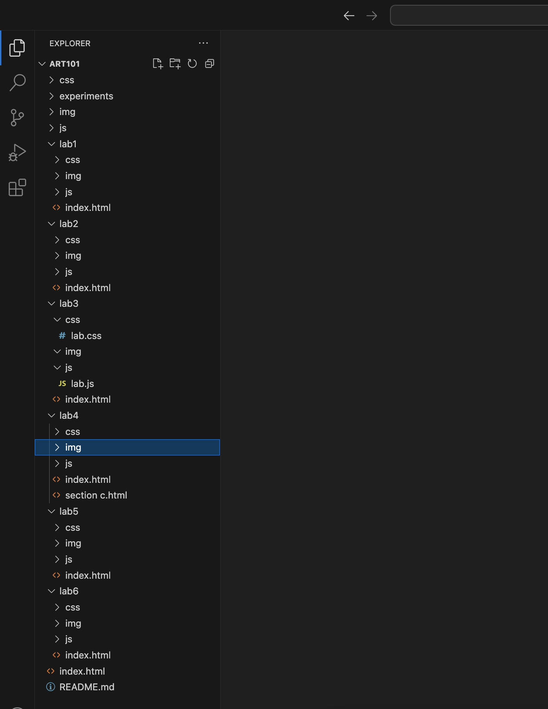
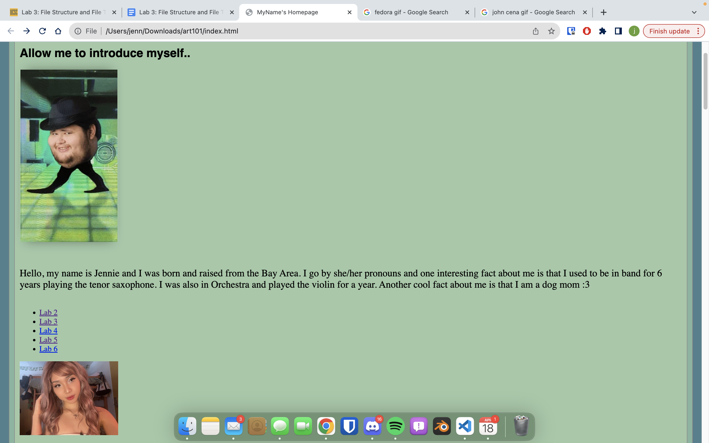
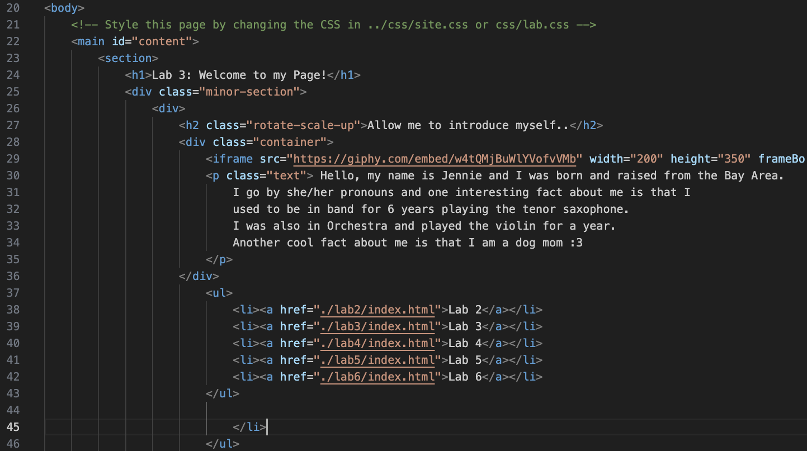
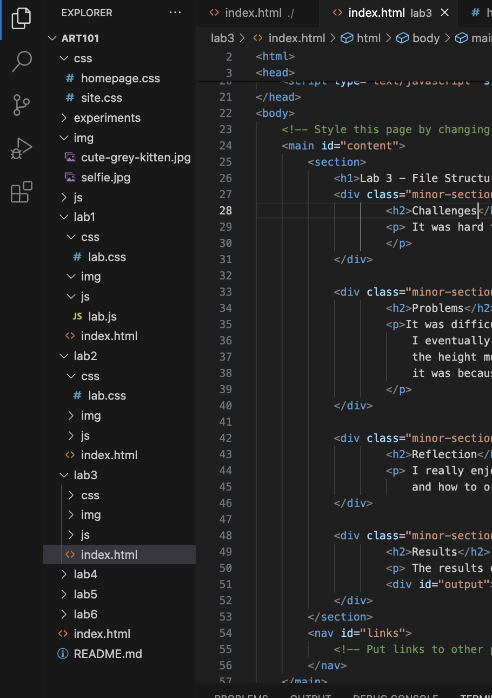
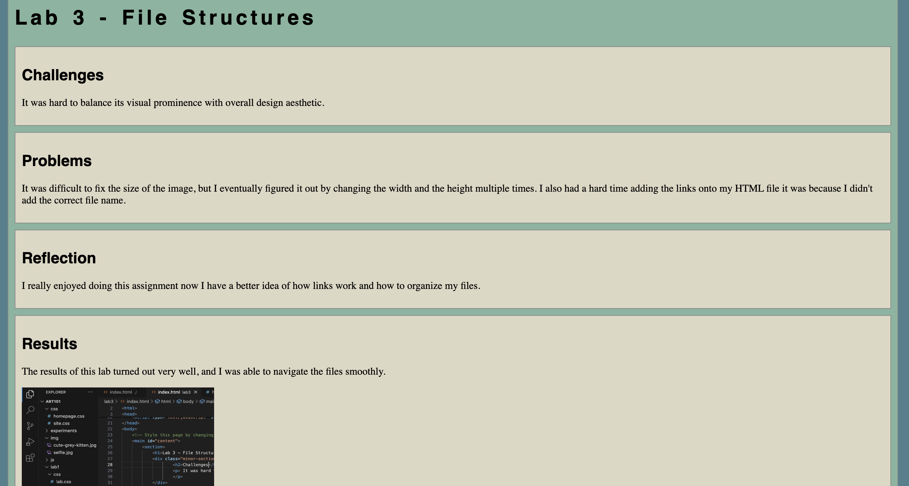

Lab 3 - File Structures
Challenges
It was hard to balance its visual prominence with overall design aesthetic.
Problems
It was difficult to fix the size of the image, but I eventually figured it out by changing the width and the height multiple times. I also had a hard time adding the links onto my HTML file it was because I didn't add the correct file name.
Reflection
I really enjoyed doing this assignment now I have a better idea of how links work and how to organize my files.
Results
The results of this lab turned out very well, and I was able to navigate the files smoothly.
File Structure part 2
Introduction Website
Bulletpoint
Lab 3 Results
Lab 3 Results Website
